Empirical studies of some of Gibson’s rules for locomotion
1 / 26
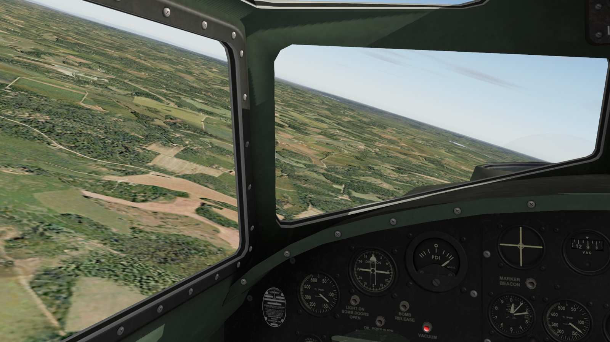
2 / 26
Major premises of ecological approach to locomotion regulation:
Ecological context – ambient energy arrays (optic array specifically) have structure.
This structure is information and it is available to be detected by any organism that has a perceptual system to do so.
Detection of information occurs directly (i.e., without any need for the internal mediational states).
For example, optic flow fields are directly used for behavioral control without any “high-level processing, storage, or representation.
3 / 26
Gibson proposed several rules for visual guidance of locomotion:
1) To be still – coordinate your body (DOFs) in such a way so as to minimize change in the optic flow. Nonflow is information about being stationary.
2) To move forward/backward – coordinate your body in such a way so as to produce global infllow/outflow of the optic flow. Inflow is information about forward movement.
3) To move to a target – put focus of expansion (FOE) is on the target. FOE is information about movement to a target.
4) To change direction – change the location of the focus of expansion (FOE) from it’s previous position. FOE change is information about change in movement direction.
5) Approach without collision – keep rate of object expansion steady.
4 / 26
To be still – coordinate your body (DOFs) in such a way so as to minimize change in the optic flow. Nonflow is information about being stationary.
To move forward/backward – coordinate your body in such a way so as to produce global infllow/outflow of the optic flow. Inflow is information about forward movement.
Is there a difference in how radial and lamellar flow affect us?
7 / 26
What is the effect of central vs. peripheral optic flow on postural control?
Stoffregen (1985)
The diagonal line through the left wall in the side condition indicates that that wall was out of sight behind the observer's head.
The data shown are mean correlations between room movement and observer sway.
The small squares in the schematic layout and in the side condition indicate the area of gaze.
Sample records of room and observer movement. (Scale is the same on both records.)
Conclusion: Peripheral flow has a stronger influence on perceived egomotion than central flow.
8 / 26
However, retinal position is not the only factor to affect egomotion
Peripheral retina appears to be specialized for pick up of lamellar optical flow, but not radial flow.
Additional conclusions: retinal location is not the whole story; structure of the ambient optic array also matters (radial vs. lamellar). Retinal specialization and the AOE structure are complimentary.
Stoffregen, T. A. (1985). Flow structure versus retinal location in the optical control of stance. Journal of Experimental Psychology: Human Perception and Performance, 11(5), 554–565. https://doi.org/10.1037/0096-1523.11.5.554
9 / 26
3) To move to a target – put focus of expansion (FOE) is on the target. FOE is information about movement to a target.
10 / 26
Warren (1988): Can people actually determine the direction of locomotion based on the optic flow patterns?
FOE specifies direction of egomotion or heading
Retinal flow vs. ambient optic flow
Effect of eye movement on retinal flow – disrupts the flow pattern
Question: Can we still perceive heading direction?
Warren (1988)
11 / 26
Independent variable:
Eye movement fixed
Smooth pursuit eye movement
Dependent variable:
Chance level
“Are you going to the left or right of the blue bar?”
Result: Heading angle judgments were accurate in both conditions
Warren (1988)
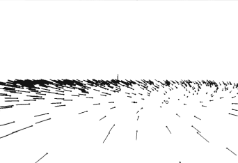
12 / 26
Warren et al. (2001): Is locomotion controlled using FOE or using a simpler egocentric direction strategy?
Walk in the egocentric direction of the goal
Walk so as to keep the FOE on the goal
“Locomotor axis”
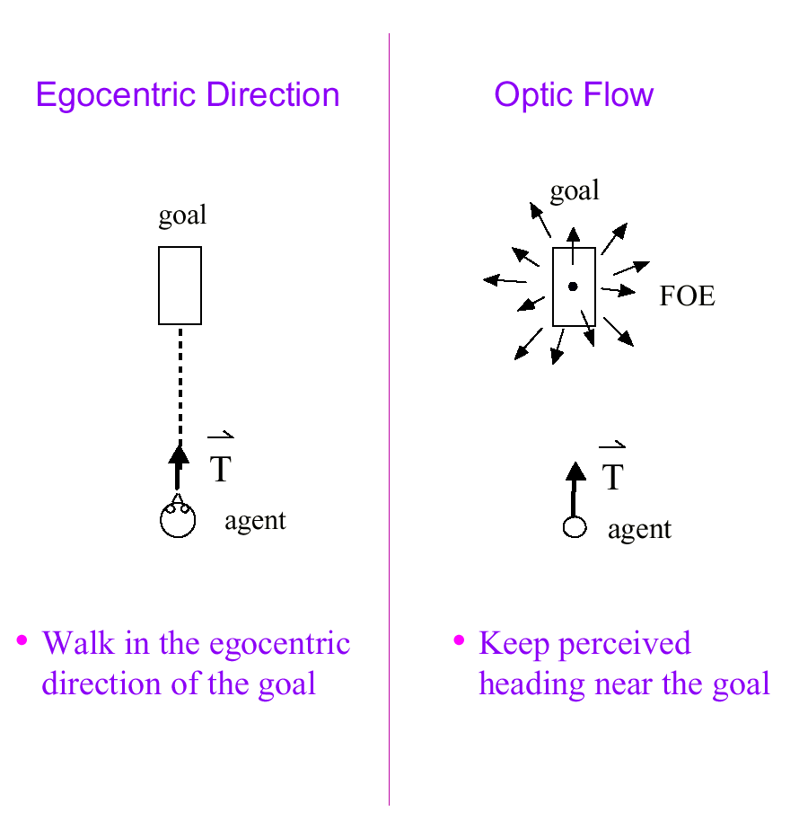
13 / 26
VenLab
directed by Bill Warren at Brown University
https://sites.brown.edu/venlab/
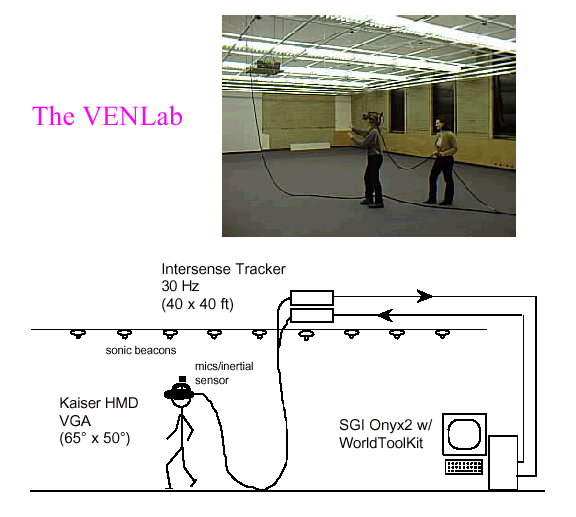
14 / 26
Virtual heading manipulation: Offset FOE from the direction of walking by δ = 10°
Task: walk to the goal
Dependent measure: Path in the physical world
Additional independent variable: richness of the virtual world
Warren et al. (2001)
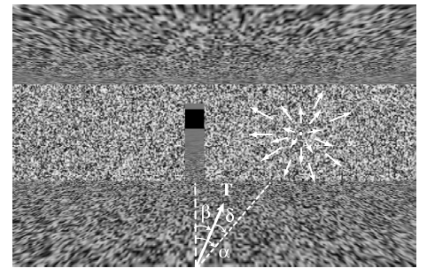
15 / 26
Predictions:
Optic flow strategy
Egocentric strategy
Optic flow strategy predicts linear trajectories in locomotion
Walk so that FOE and the target overlap
Egocentric strategy predicts curved trajectories
Walk toward the target and ignore FOE
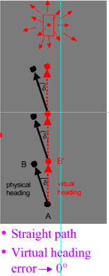
16 / 26
Results mostly favored the optic flow hypothesis but showed that egocentric direction also matters.
Conclusion: locomotion was governed by a combination of the two variables.
When no flow was available, behavior was consistent with the egocentric direction hypothesis, but as flow was added to the display, it increasingly dominated behavior, following the optic flow hypothesis more consistently.
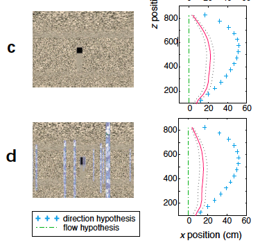
17 / 26
5) Approach without collision – keep the rate of object expansion steady.
18 / 26
Perceiving Collisions & Interceptions With Objects
Information about time-to-contact
Animals can control their approach to objects by using a particular kind of information in the optical array: so-called tau (τ)
19 / 26
A Computational Approach (Indirect Perception)
Since it is true that
d = vt (distance = speed time),
and by algebra,
d/v = t
an observer can compute time-to-contact by:
(1) Judging the distance between the self and object
(2) Judging speed
(3) Dividing distance by speed
Problem: People are bad at judging absolute distance & speed (pretty much bad at any kind of absolute judgment of this kind)
If humans are horrible at these tasks, how do gannets compute time-to-contact in this way? The gannet somehow knows when to fold its wings back before hitting the water, but how?
20 / 26
Direct Perception Approach
Don’t need to judge distance & time; there is information
available to the visual system that specifies time-to-contact
Has to do with how image size changes with distance
21 / 26
• S = size of closed optical contour (size of image an object forms on the retina)
• As an object gets closer to an observer, S increases
SD
SC > SD
SC
• R is the rate at which S changes; determined by approach speed
• Time-to-contact is specified by t (tau), which is inversely
proportional to the rate of expansion of a closed optical contour: t ~ 1/R
- Slow object: R is low, therefore t is high
More time to duck, catch, etc.
- Fast object: R is high, therefore t is low
Less time to duck, catch, etc.
• Time-to-contact does not need to be computed, because an animal can perceive time-to-contact by detecting the optical variable tau
• Tau is information
22 / 26
Approach a moving target (pursuit): How do people walk to a moving target, and what visual information do they use to do so?
23 / 26
Results showed that people seem to use this strategy
β
β – target-heading angle (bearing angle)
Illustration of the two strategies (pursuit and interception) and three sources of information (egocentric direction, global optic flow, and local optic flow) for walking to a moving target.
Fajen & Warren (2004)
24 / 26
• Optic flow demonstrates importance of activity for perception—not defined in absence of observer motion, but without optic flow the control of motion would be difficult
25 / 26
Overall, Gibson’s 1978 book instigated much research.
There are some changes to thinking, but overall, it seems on a good track.


 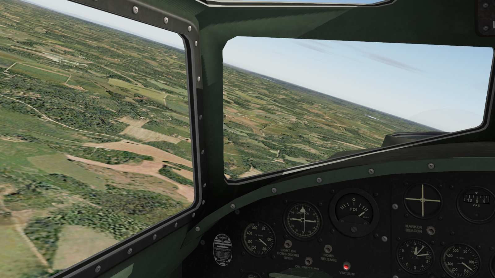
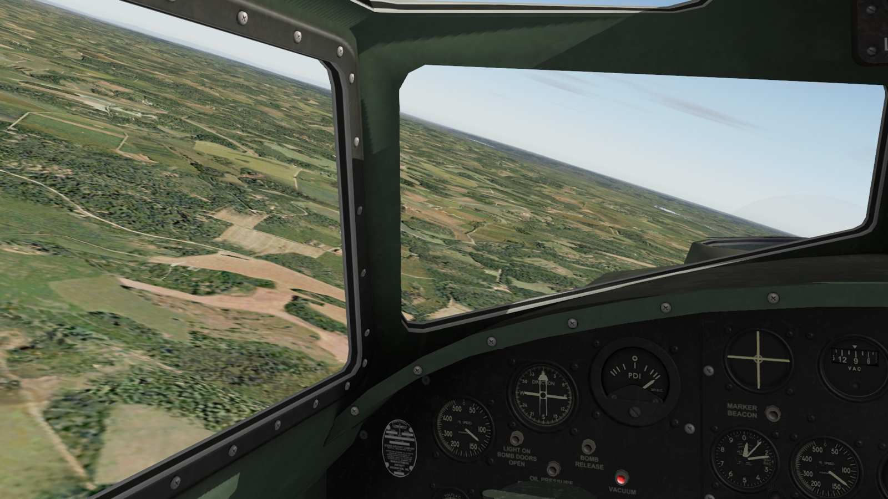


 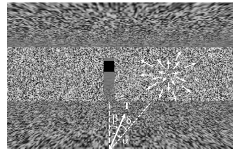
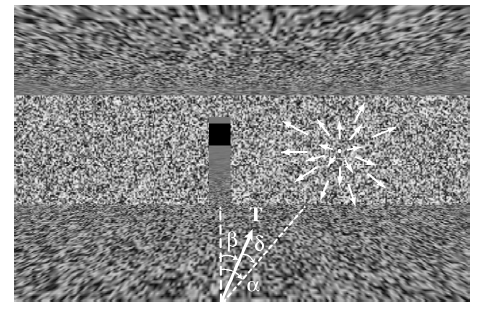
 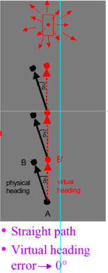
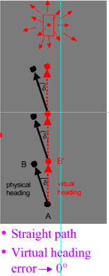

 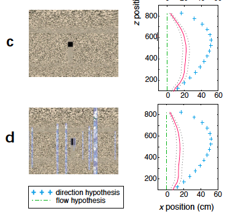
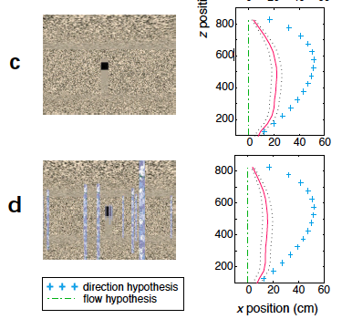